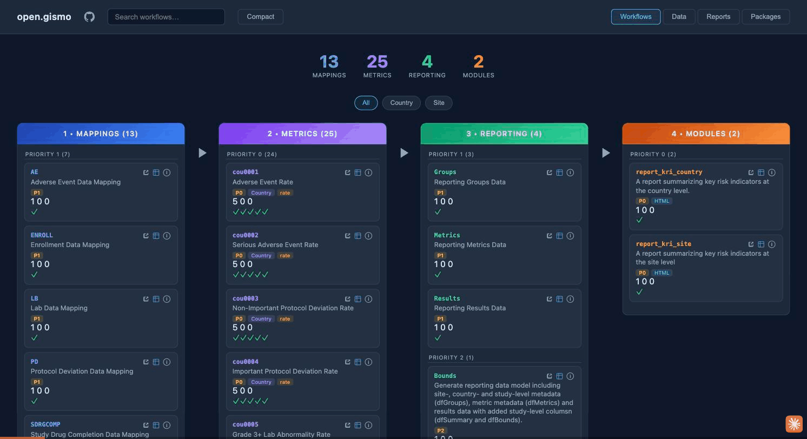
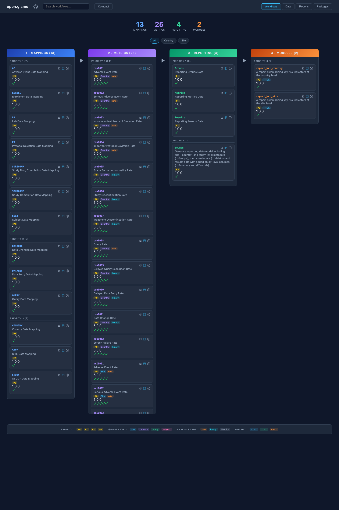
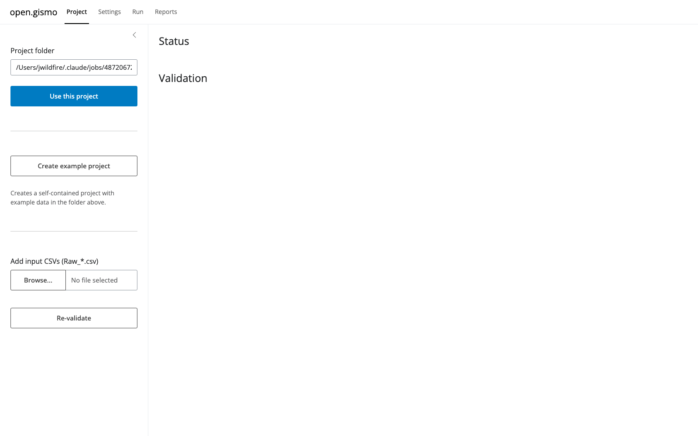
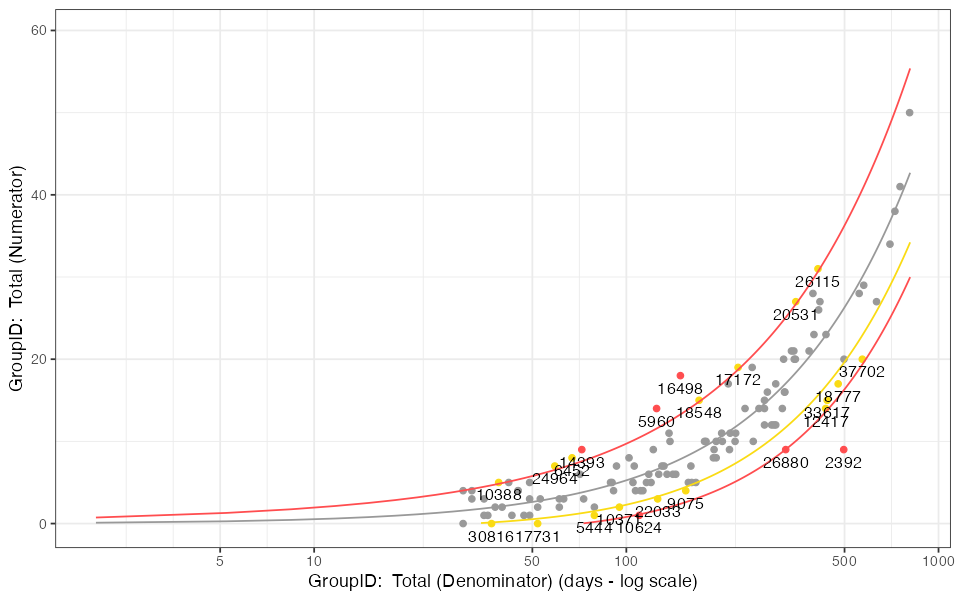

A design decision and a phased plan to turn open.gismo into a v1.0 that replaces the safetyGraphics Shiny app: local-first compute on the modern gsm stack, with GitHub demoted from backbone to optional publisher. Includes the working Phase 0 prototype built and verified this session.
Architecture C+ — "local-first engine, portable site, thin app face." A four-judge panel scored it 33 against 22 (local Shiny app) and 16 (GitHub template). Compute runs where the data lives; the v0.1 GitHub lane survives unchanged as an optional publisher.
A working prototype on the jwildfire/open.gismo fork: the og_*/fs_* R surface, a Reports tab on the site, and a thin app. Full pipeline runs end-to-end locally in ~20s — 13 domains, 25 metrics, 2 interactive KRI reports, 25 static charts. Tests green in new CI.
A four-phase roadmap to a v1.0 release by September 2026, ahead of the R/Pharma keynote: harden the local core, add settings & data UX, prove the publish lane, ship. Six decisions (D1–D6) are staged for your ratification.
The keynote arc this unlocks is true for real trial data: one command, your data never leaves your laptop, and the same project folder publishes to the web when you choose to share it — the safetyGraphics author replacing his own app on the stack the ecosystem moved to.
Where things stand
The honest read from the deep review: v0.1.0 shipped a small, well-tested R package (~800 lines of GitHub plumbing backed by ~4,800 lines of testthat + property tests), a Vite single-page pipeline explorer, four GitHub Actions, and a demo branch that is a genuine end-to-end artifact — 13 Raw_* domains snapshotted through the real gsm.mapping / gsm.kri / gsm.reporting workflows and deployed to Pages. The design doc's founding principle held: the only new R code is GitHub plumbing, and the pipeline itself is a thin layer over workr, exactly where gsm.kri's own dev branch is already heading.
But measured against the actual v1.0 goal — replace the safetyGraphics Shiny app — the front-end was a pipeline observability tool, not a safety-review app. There was no data on-ramp, no settings surface, and the interactive KRI reports the pipeline already produces were rendered nowhere. None of the three core user-facing requirements was met, though nearly every ingredient existed one shelf away.
| Core requirement | Status v0.1 | What was already there / what was missing |
|---|---|---|
| Load your own data | MISSING UX | Mapping specs define the expected domains and CheckSpec can validate against them — but there was no on-ramp and no feedback telling a user why their data didn't fit. The GitHub route was never run end-to-end; the local route meant hand-editing a script. |
| Customize settings | CODE-ONLY | Every knob a monitor turns (thresholds, active metrics, group level) is already well-factored as YAML meta. But the static site is read-only by construction — there was no edit surface at all. |
| Linked static + interactive reports | NOT SURFACED | The closest gap: gsm.kri's Report_KRI already emits self-contained interactive HTML with within-report linking, and the demo branch ran it. Nobody could see the output — the site had no report viewer, and static-chart integration hadn't started. |
Two structural facts shaped the decision below: many target users cannot push clinical trial data to GitHub at all (and private-repo Pages costs money), and the pipeline's own reports render identically in a Shiny tab, an iframe on the static site, or a double-clicked local file — so the reporting layer is front-end-agnostic and the real fork is only about where data-loading and settings live.
The architecture decision
The review put three coherent architectures to a four-judge panel — one judge per lens: the safetyGraphics end-user's experience, ecosystem strategy, one-session feasibility, and v1.0 roadmap durability.
Double down on the backbone: a "use this template" study repo; drop Raw_*.csv in, push, and an Action runs the pipeline and redeploys Pages. Maximum reuse of v0.1.
Risk: the clinical-data wall makes it structurally demo/synthetic-grade for the core audience, and its critical loop runs through an Action that has never executed end-to-end.
A RunGismoApp() Shiny successor to safetyGraphicsApp(): point at a folder, validate, tweak settings, Run, browse reports — data never leaves the machine. Best UX on paper.
Risk: rebuilds the Shiny monolith the ecosystem split to escape, orphans the entire v0.1 investment, and skips the genuinely hard part (mapping arbitrary data).
One command — og_run(project_dir) — runs the whole pipeline locally via a filesystem twin of the GitHub backend, into a project folder that is also push-to-Pages publishable. Same artifact, two targets.
Risk: the static site still can't edit settings interactively, so ease-of-use rests on the edit-YAML-and-rerun loop — a real gap, but one any later editor fills over the same files.
| Lens (judge) | A · Template | B · Shiny app | C · Local-first |
|---|---|---|---|
| End-user experience | 2 | 8 | 6 |
| Ecosystem strategy | 7 | 3 | 9 |
| One-session feasibility | 3 | 6 | 9 |
| v1.0 roadmap durability | 4 | 5 | 9 |
| Total (of 40) | 16 | 22 | 33 |
C led on three of four lenses. The one lens it lost — end-user experience — is exactly the gap the adopted hybrid closes.
The panel converged on the UX judge's hybrid, ratified with the strategy judge's riders. Build C's local core exactly as specified, then put a thin interactive shell on top — strictly an editor / runner / viewer that round-trips the project folder's YAML, never a monolith holding its own state. GitHub is demoted from backbone to publisher; the v0.1 gh_* package survives as the optional publishing lane.
Phase 0 · this session
The prototype ships on the jwildfire/open.gismo fork, branch feat/local-first-prototype, as a draft PR (PR #1). It adds a local-first R surface, surfaces the pipeline's reports on the existing site, and puts a thin app in front — all built and verified end-to-end this session.
| Function | What it does |
|---|---|
| fs_lConfig() | Filesystem LoadData/SaveData twin of gh_lConfig — the second implementation that turns the workr lConfig seam into a real swappable-backend contract. |
| og_init(dir) | Scaffolds config/ + workflow/ + input/ from the demo layout; example=TRUE seeds 13 Raw_* domains from gsm.core::lSource so it works before any user data arrives. |
| og_validate(dir) | Runs the mapping specs' CheckSpec over the input CSVs and prints a human-readable per-domain pass/fail table — the "why did my data fail" forgiveness layer. |
| og_run(dir) | Runs all four pipeline phases via workr and writes the demo payload (mapped data, metrics, reporting objects, reports, status.json) into the folder. |
| og_view(dir) | Serves the built site over local HTTP and opens it in the browser. |
| og_app(dir) | Thin Shiny shell: folder picker, validation table, metric-settings editor, Run button, live Report_KRI — every action round-trips the project folder's files. |
| StandardizeResults() | The GroupID coercion seam, promoted from a demo script hack to a real workflow step. |
On the front-end, the Vite site gains a Reports tab (between Data and Packages) that lists and iframes the interactive KRI reports and shows static-chart thumbnails — the small change that makes the platform demo like a safety-review app instead of a pipeline monitor. New CI (R-CMD-check + site-tests) runs the previously-dormant test suites on every push.
The full loop was driven end-to-end from a fresh folder, and — critically — the settings loop was proven to change real output:
og_init(example=TRUE) scaffolds the project and writes 13 example domains (183 MB) from the bundled gsm.core data.
og_validate() reports 12/12 input domains OK against the mapping specs.
og_run() produces 13 mapped domains, 25 metrics, 4 reporting objects, 2 interactive KRI reports (site + country), 25 static chart PNGs, and the site payload.
Tighten kri0001 thresholds and hand-edit the AE input CSV; separately deactivate kri0012.
Flagged sites move 13 → 23; the deactivated metric drops the run to 24 metrics and stale outputs are cleaned. The customize-settings requirement, demonstrated on real output.
Live acceptance testing also caught a foot-gun: an invalid Threshold/Flag combination could be written silently. A contract guard was added so the invalid combo now errors at write time with an actionable message.




The prototype was built by a six-package fleet and then put through a three-lens adversarial review (R-core, integration, packaging). The review confirmed 12 findings; 11 were fixed in this PR and 1 was deferred to the roadmap — metric-phase bContinueOnError, which is spec-compliant demo-parity behavior today and becomes a graceful-degradation improvement in Phase 1. Three further candidate findings were investigated and dismissed. The R suite now runs 640 pass / 0 fail (a suite that previously never ran in CI, plus two pre-existing dev-branch test bugs fixed) and the site suite runs 181 vitest pass.
Whole-session process: a 7-reader review fleet feeding one synthesis, a 4-judge design panel, a 6-package build fleet, and a 3-lens adversarial review — the decision, the code, and the audit all in one session.
Roadmap to v1.0
Because C+ is durable by construction — every line written this session ships in v1.0, and every unresolved question is an optional lane rather than a blocking bet — the path forward is additive.
For @jwildfire
Local-first core + thin Shiny shell; GitHub as the publishing lane.
Recommend yes — it won the panel 33/22/16, orphans nothing from v0.1, and is proven end-to-end in this PR.
PR upstream to Gilead-BioStats/open.gismo dev, or continue on the jwildfire fork / OpenRBQM?
Fork is the working home now (SAML-blocked upstream); decide the eventual destination before Phase 1 opens hub sub-issues.
gsm-convention-only + validation (cheap) · rename-map assist (middle, currently planned) · full safetyGraphics mapping UI (expensive).
Recommend the middle path — rename-map assist in data-config.yaml; the full mapping UI is the single most expensive missing piece and stays out of v1.0 unless you raise ambition.
Keep Shiny as the local shell, or aim webR/static to replace it post-v1.0?
C+ works either way — the app is a thin editor over the folder, so this stays a deferrable call, not a foundation bet.
Open obot.roadmap Requirement issue(s) for Phases 1–4 with cross-repo sub-issues.
Every prototype piece maps one-to-one onto a requirement; recommend filing once C+ is ratified (D1).
Give them a local story, keep them GitHub-only, or park them?
Built and tested but unused by the demo; recommend parking in the GitHub lane until the publishing story matures in Phase 2/3.